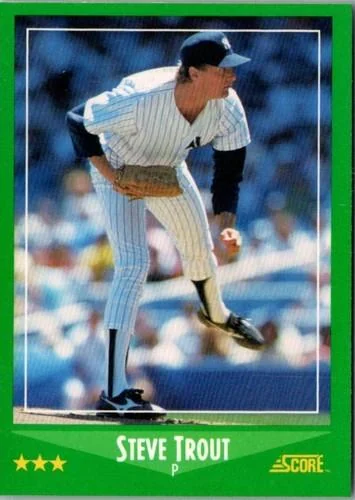
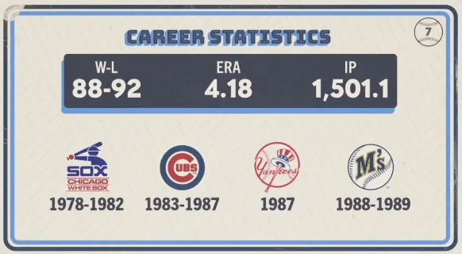

Steve Trout
Career Highlights & Facts
(Facts are AI-generated and may require verification)
- This pitcher arrived in the Bronx as part of a mid-season transaction that sent a future teammate and two other players to the Windy City.
- Before donning the pinstripes, he was a first-round draft selection who spent his early years as a primary starter for a club in the American League.
- His time in New York was brief, serving as a bridge between his tenure in the National League and his final stop in the Pacific Northwest.
Would you like to find out more about Steve Trout?
Career Totals
| WAR | W | L | ERA | G | GS | SV | IP | SO | WHIP |
|---|---|---|---|---|---|---|---|---|---|
| 13.3 | 88 | 92 | 4.18 | 301 | 236 | 4 | 1501.1 | 656 | 1.494 |
Statistics via Baseball-Reference.com
The Original Clue
